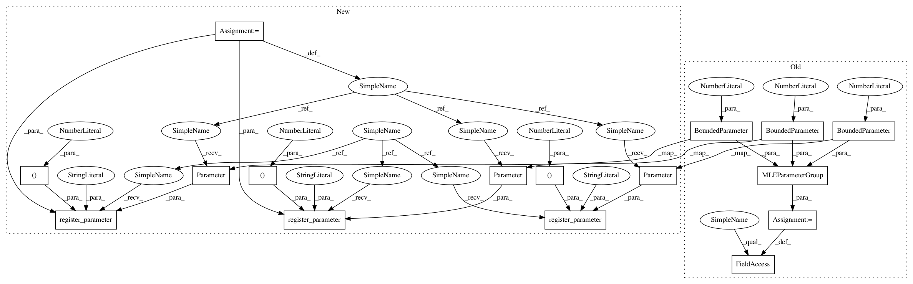

fef0836b77dabd9a1816db90d0bb98ea2dd64ea0,test/examples/spectral_mixture_gp_regression_test.py,SpectralMixtureGPModel,__init__,#SpectralMixtureGPModel#,23
Before Change
super(SpectralMixtureGPModel, self).__init__(GaussianLikelihood())
self.mean_module = ConstantMean()
self.covar_module = SpectralMixtureKernel()
self.params = MLEParameterGroup(
log_noise=BoundedParameter(torch.Tensor([-2]), -15, 15),
log_mixture_weights=BoundedParameter(torch.zeros(3), -15, 15),
log_mixture_means=BoundedParameter(torch.zeros(3), -15, 15),
log_mixture_scales=BoundedParameter(torch.zeros(3), -15, 15)
)
def forward(self, x):
mean_x = self.mean_module(x, constant=Variable(torch.Tensor([0])))
covar_x = self.covar_module(x,
After Change
class SpectralMixtureGPModel(gpytorch.GPModel):
def __init__(self):
super(SpectralMixtureGPModel, self).__init__(GaussianLikelihood())
self.mean_module = ConstantMean()
self.covar_module = SpectralMixtureKernel()
self.register_parameter("log_noise", nn.Parameter(torch.Tensor([-2])), bounds=(-5, 5))
self.register_parameter("log_mixture_weights", nn.Parameter(torch.zeros(3)), bounds=(-5, 5))
self.register_parameter("log_mixture_means", nn.Parameter(torch.zeros(3)), bounds=(-5, 5))
self.register_parameter("log_mixture_scales", nn.Parameter(torch.zeros(3)), bounds=(-5, 5))
def forward(self, x):
mean_x = self.mean_module(x, constant=Variable(torch.Tensor([0])))
covar_x = self.covar_module(x,
In pattern: SUPERPATTERN
Frequency: 3
Non-data size: 16
Instances
Project Name: cornellius-gp/gpytorch
Commit Name: fef0836b77dabd9a1816db90d0bb98ea2dd64ea0
Time: 2017-08-11
Author: gpleiss@gmail.com
File Name: test/examples/spectral_mixture_gp_regression_test.py
Class Name: SpectralMixtureGPModel
Method Name: __init__
Project Name: cornellius-gp/gpytorch
Commit Name: fef0836b77dabd9a1816db90d0bb98ea2dd64ea0
Time: 2017-08-11
Author: gpleiss@gmail.com
File Name: test/examples/multitask_gp_regression_test.py
Class Name: MultitaskGPModel
Method Name: __init__
Project Name: cornellius-gp/gpytorch
Commit Name: fef0836b77dabd9a1816db90d0bb98ea2dd64ea0
Time: 2017-08-11
Author: gpleiss@gmail.com
File Name: test/examples/spectral_mixture_gp_regression_test.py
Class Name: SpectralMixtureGPModel
Method Name: __init__
Project Name: cornellius-gp/gpytorch
Commit Name: fef0836b77dabd9a1816db90d0bb98ea2dd64ea0
Time: 2017-08-11
Author: gpleiss@gmail.com
File Name: test/examples/simple_gp_regression_test.py
Class Name: ExactGPModel
Method Name: __init__